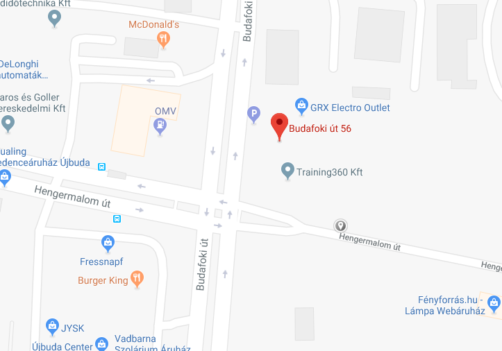

Elérhetőségünk
Címünk
1117 Budapest, Budafoki út 56.
Telefonszámunk
(1) 880-0048
Nyitvatartás
- Hétfő 10:00-20:00
- Kedd 10:00-20:00
- Szerda 10:00-20:00
- Csütörtök 10:00-20:00
- Péntek 10:00-22:00
- Szombat 10:00-22:00
- Vasárnap 10:00-22:00
Megközelítés
Autóval a Hengermalom utcában lehet parkolni.
Tömegközlekedéssel a 103 busz Hengermalom úti végállomásánál, illetve a 33, 133E buszokkal a Hengermalom út megállónál kell leszállni.
